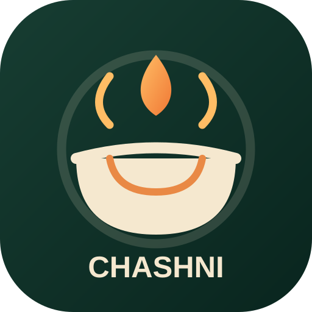

پیشنهاد با مواد موجود
مواد اولیه و وسایلت رو وارد کن و غذاهای قابلتهیه رو ببین.

چاشنیآشپزخانه هوشمنداز یک غذای اصیل ایرانی تا دسرهای ترند دنیا؛ چیزی که دنبالش هستی را پیدا کن، یا با مواد داخل یخچالت یک ایده تازه بساز.
مواد داخل یخچال و کابینتت رو وارد کن؛ چاشنی بر اساس مواد موجود بهت ایده میده.
منتخب دستورهای پرطرفدار و ایدههای جذاب برای آشپزی امروز.
نکته: این بخش در نسخه فعلی شامل منتخبهای داخلی برنامه است؛ رتبهبندی زنده شبکههای اجتماعی نیست.
جستجو کن، فیلتر بزن و دستور بعدیات رو پیدا کن.
عبارت جستجو یا فیلترها رو تغییر بده.
غذاهایی که دوست داری رو برای روزهای هفته بچین و برای خرید آماده باش.
ابزارهایی برای اینکه از ایده تا بشقاب، راحتتر پیش بری.
مواد اولیه و وسایلت رو وارد کن و غذاهای قابلتهیه رو ببین.
دستورهای خودت رو ثبت کن، ویرایش کن و برای همیشه در مرورگرت نگه دار.
مواد لازم هر دستور رو یکجا جمع کن و هنگام خرید تیک بزن.
برای هر روز غذا انتخاب کن تا تصمیمگیری هر شب سخت نباشه.